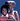
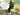
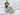
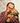

De: La Frikipedia, la enciclopedia extremadamente seria.
De: La Frikipedia, la enciclopedia extremadamente seria. De: La Frikipedia, la enciclopedia extremadamente seria.
| De la serie conflictos armados: | ||||
| Guerra del Cuarto Reich | ||||
| ||||
| Lugar y fecha | Cuando Alemania este en sus días. | |||
|---|---|---|---|---|
| Bandos | Neo-Nazis | No Neo-Nazis | ||
| Fuerzas | Zombies alemanes  Aliens IV Reich Galaico |
los suezes los australios polonos Aliens | ||
| Comandantes | Posiblemente Hitler Wft? otra vez Hitler Pero que mierda Hitler? |
Chabelo El calvo  Un canguro  Un Oso polar  Vladimir putin VI | ||
| Armas | Racismo, Discriminación, Mordidas, Bombas nucleares | Artilleria, Posiblemente solo manden a .. | ||
| Bajas | Nunca mueren siempre volverán. | Mitad de la armada se volverán zombies Neo-Nazis | ||
| Resultado | Se cree que caerá un meteorito. | |||
El Cuarto Reich es un término utilizado para describir lo que sucederá en un mes futuro teórico posterior al Tercer Reich.
Después de la Segunda Guerra Mundial los alemanes quedaron llorando por perder el juego y a su estrellita Hitler, No lo aceptaban así que quisieron empezar otra vez recogiendo el ADN de los soldados y el bigote de Hitler, Intentan revivirlos.
Contrataron los servicios de una empresa llamada Umbrella que les ayudara a recuperar a sus soldaditos de guerra, pero párese ser que al revivirlos pueden quedar en dos personalidades en Pony o en zombie, Estariamos perdidos si todos los soldados se convirtieran en Ponys incluso seria mas peligroso para ellos, Es mas probable que escojan los zombies.
En este momento hacen experimentos con chinos para asegurarse que los Zombies solo maten judíos.
Llevan años haciendo experimentos pero a un no consiguen resultado, Fuentes de extrema confianza aseguran que recibirán ayuda de los Aliens que les brindaran su semen liquido especial que les ayudara a revivirlos.
Se han echo varios tipos del prototipos del cuerpo de Hitler la mayoría están reconstruidos al 50%, Pero sigue estando defectuosos e inestables creen que si liberan alguno violara lo que se encuentre no tomara una conducta adecuada a la que quieren que tenga.
No solo quieren traer a Hitler también intentaran construir el cuerpo de su esposa Eva Braun, Con fin de darle un poco de felicidad a hitler todas las noches.... (Que?¡, Para que un hombre conquiste el mundo necesita algo de emoción..)
Modificaran el ADN de sus perros, Para que digievolucionen a criaturas monstruosas, algo así como los teletubbies tendrán la posibilidad de manejar armas de alta gama y mucha artillería militar.
Intentan construir el cuerpo del amigo intimo de Hitler Joseph Goebbels, A un que este es uno de los mas grandes desafíos pues a este señor no lo conocía ni su mamá no era muy conocido, Así que la construcción de su cuerpo
es muy complicada, La razón por la cual también quieren revivirlo es ninguna¡ siempre quieren mas personajes de relleno en la guerra para hacerla mas épica.
En cuanto al ejercito no han avanzado una puta mierda nada.

|
Nei Nein Nein Nein Nein Nein Nein, |

|
| Sabias palabras de Hitler |
Los aliens darán una gran lucha pues estos llevan millones de años de avances tecnológicos, se dice que solo aceptaron ayudar por que estaban aburridos y no tenían nada mas que hacer, brindaran muchas armas a los Neo-Nazis-Zombies-Robots-Tu puta madre, Al final de haber matado a medio Europa se aburrirán y se irán dejando a los Nazis indefensos, Sera la oportunidad que Diox le dará a Vladimir Putin para acabar con ellos.
El señor Hitler sera revivido unas cuantas miles de veces a pesar de ser mierda y siempre perderá las guerras por especial, la diferencia esta vez sera que no podrá suicidarse se espera que al final mentirán diciendo la noticia de haberlo acabado, pero la verdad sera que el gobierno tomara su cuerpo y lo llevaran al Area 51, Haciendo varios experimentos con el y metiéndole varios artefactos por el culo.
Sera una de las guerras mundiales mas cortas de la historia se estima que esto durara solo una semana, A un que la participación del señor Hitler en guerras futuras a un se vera la diferencia es que no tendrá el protagonismo como líder y no es lo mismo.
| |
|---|
|
|
Autor(es):